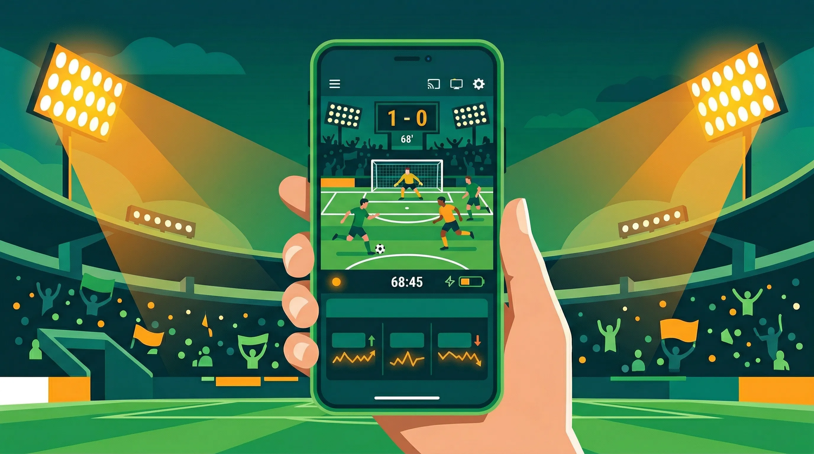

Football betting basics
No fluff. Just the things you actually need to know before you put money on a football match.
No fluff. Just the things you actually need to know before you put money on a football match.
Practical guides to football betting covering odds, markets, strategy, bankroll management and how bookmakers work. No hype, no promises - just clear explanations from experienced bettors.

Understanding Betting Odds
Decimal, fractional and American odds explained clearly with examples, conversion formulas and implied probability calculations.
Read GuideFootball Betting Markets
Every football betting market explained: Match Result, BTTS, Over/Under, Correct Score, Goalscorer, Asian Handicap and more.
Read Guide
Bankroll Management
How to manage your betting bankroll: unit staking, Kelly Criterion, tracking bets and setting limits for long-term discipline.
Read GuideValue Betting Explained
How to find value in football betting markets. Expected value, comparing odds, line shopping and understanding implied probability.
Read Guide
Live Football Betting
In-play betting strategy for football. When to bet live, which markets to use and how to take advantage of in-game momentum shifts.
Read Guide
How Bookmakers Work
How bookmakers set and adjust odds, build margins, manage risk and deal with winning customers. Essential reading for serious bettors.
Read GuideHow to Use These Guides
If you are new to football betting, start with Understanding Betting Odds - getting comfortable with how odds work is the foundation for everything else. From there, Football Betting Markets will show you all the different ways you can bet on a match beyond the basic win/draw/win.
For accumulator-specific strategy, the what is an accumulator guide covers the fundamentals, while acca strategies goes deeper on how to pick selections more effectively.
For disciplined long-term betting, Bankroll Management and Value Betting are the two most important concepts to understand. Most bettors who lose consistently are not doing anything wrong with their selections - they are simply staking too much or ignoring value.
The free calculator suite and acca builder are designed to work alongside these guides as practical tools.